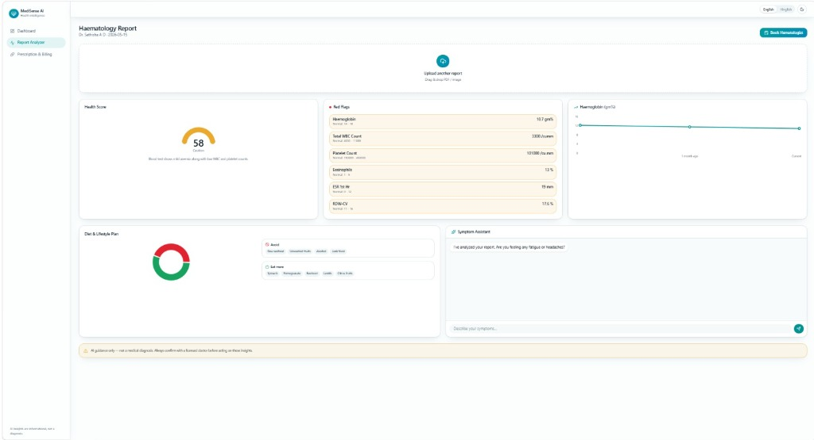
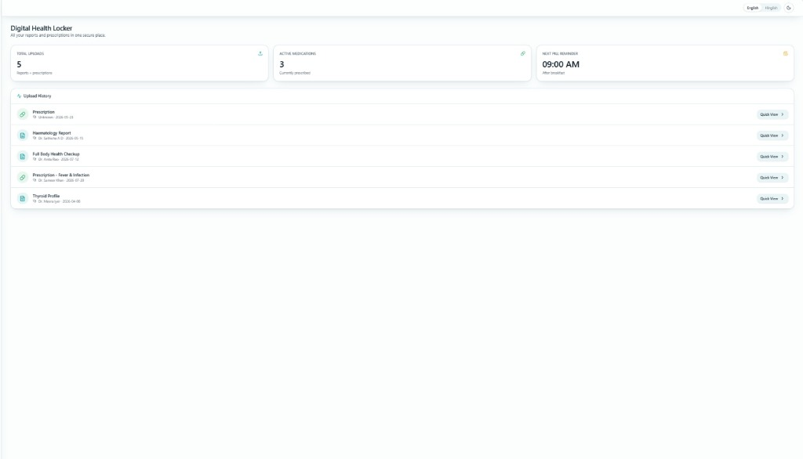

01 — The Hardware
The Pill Dispenser
A round base with 10 compartments. An orange servo arm rotates to the right compartment and pushes one pill down the chute. An IR sensor confirms the pill fell. That's it.

The actual working prototype
01
Red Base Disc
10 compartments — one for each medicine. Fixed, never moves.
02
Orange Servo Arm
Rotates to the right compartment at the scheduled time and pushes the pill down the chute.
03
IR Sensor
Detects when the pill actually falls (~20ms response). Stops the servo immediately.
04
Arduino + 18650 Batteries
Brain of the system. Dedicated battery power for servos — prevents resets and jitter.

Close-up: servo arm + compartments

ESP32 Panic Remote — 4 buttons
The Panic Remote
A wireless ESP32 device with 4 tactile buttons. Patient keeps it with them. Press a button — an alert immediately fires on the caretaker's phone via Telegram.
🚨 SOS Emergency
✅ I'm Okay
🙋 Help Needed
💊 Dispense Error